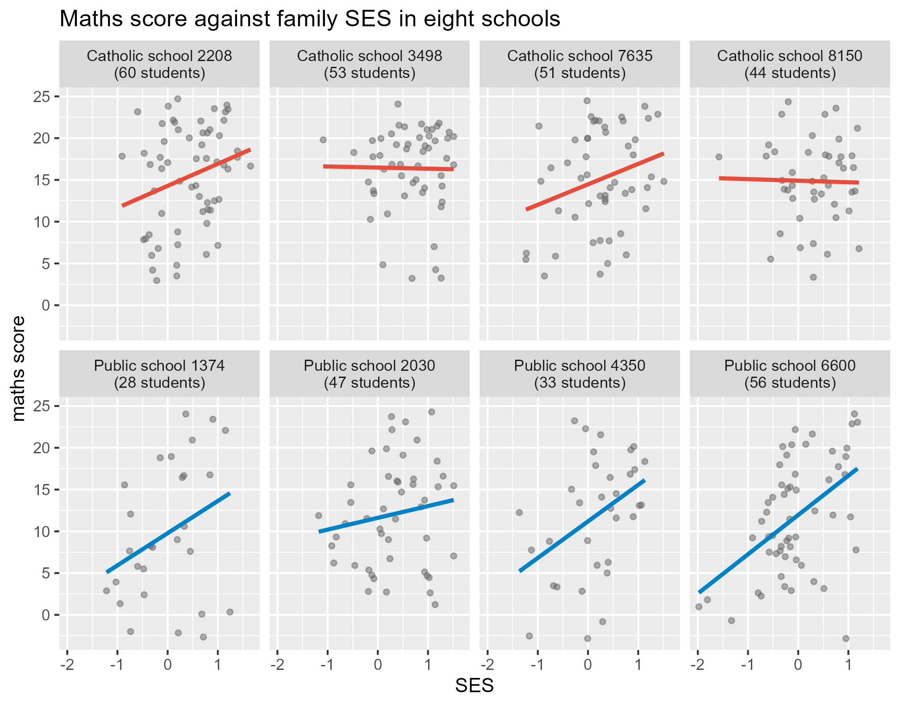
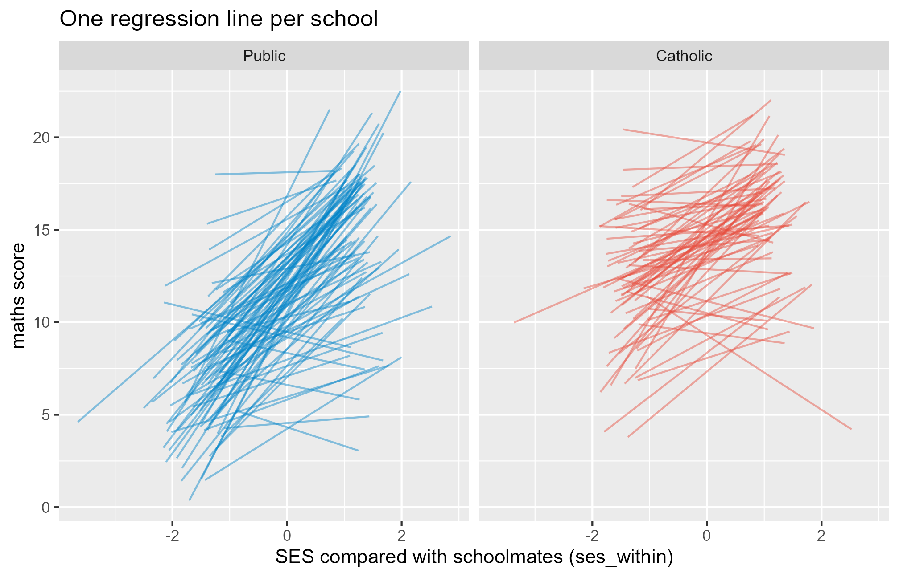
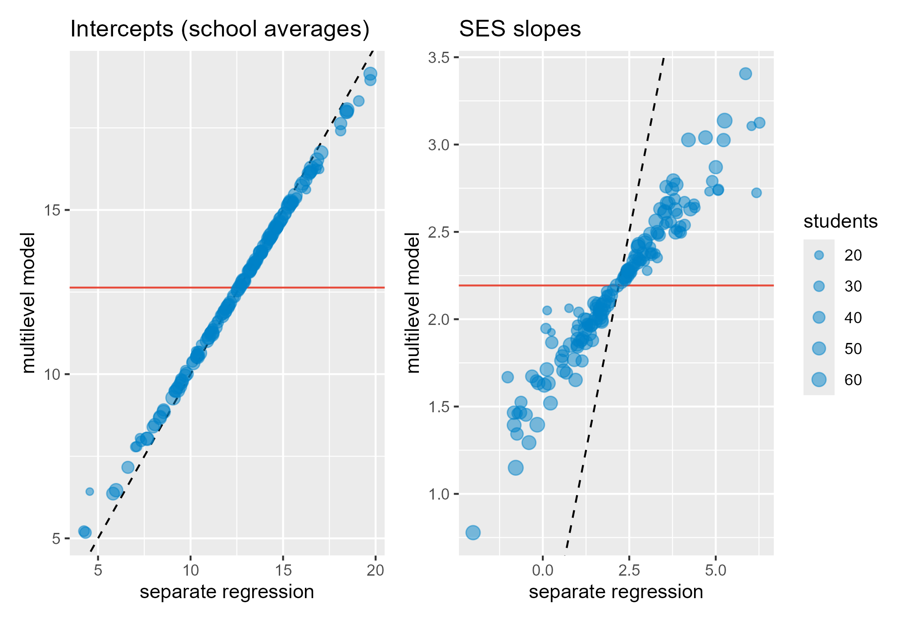
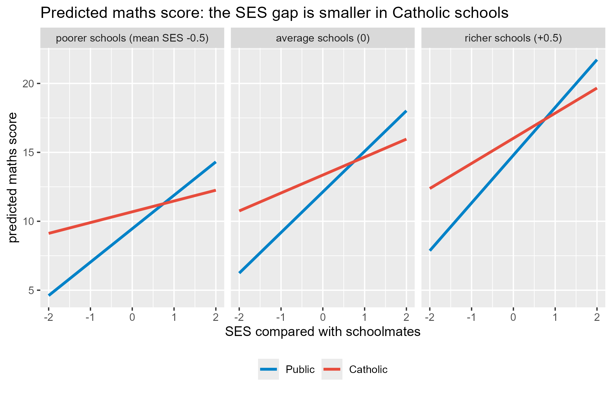
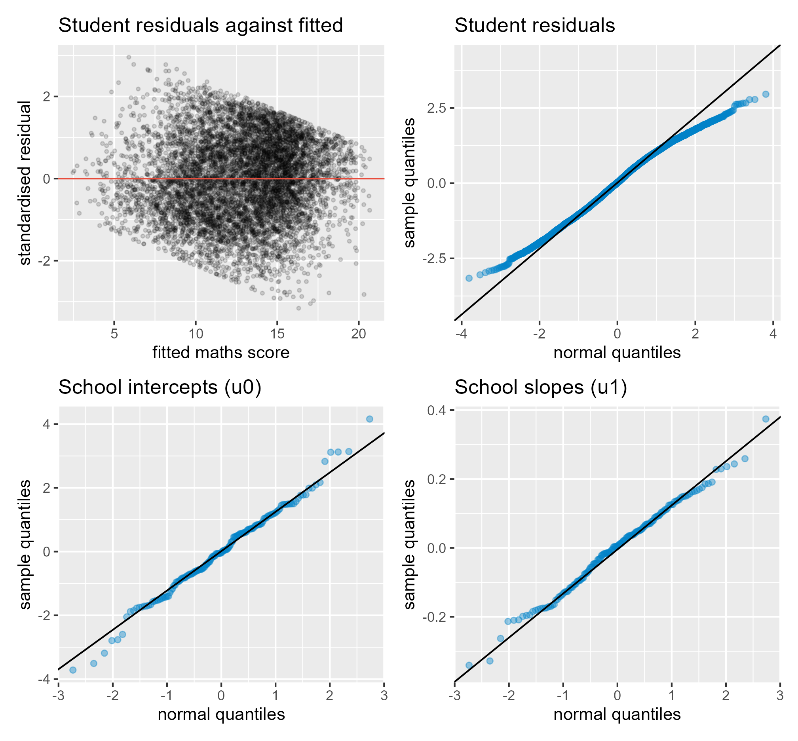

Code
library(nlme) # lme(): multilevel models (comes with R)
library(ggplot2)
library(patchwork) # put plots side by sideIn 1982 the High School and Beyond survey gave a mathematics test to students of US high schools, public and Catholic. We use the classic subset of 7,185 students in 160 schools, and ask two questions:
The students are not 7,185 independent people. They come in groups: students of the same school share teachers, neighbourhoods and resources, so their scores are more alike than the scores of students from different schools. Ordinary regression ignores this, which causes two problems:
A multilevel model handles both. It has one equation for the students (level 1) and one for the schools (level 2). The same models are also called hierarchical linear models (HLM), mixed (effects) models and random-effects models. They are not the same as “hierarchical regression” in the sense of entering predictors in blocks and testing \(\Delta R^2\), which has its own tutorial: Hierarchical Regression.
The nlme package has the students in MathAchieve and the schools in MathAchSchool. We join them and give the columns short names:
students <- as.data.frame(MathAchieve)
hsb <- merge(students[, c("School", "Minority", "Sex", "SES", "MathAch")],
MathAchSchool[, c("School", "Size", "Sector")], by = "School")
names(hsb) <- c("school", "minority", "sex", "ses", "math", "size", "sector")
hsb$school <- factor(hsb$school)
c(students = nrow(hsb), schools = nlevels(hsb$school))students schools
7185 160 sector
Public Catholic
90 70 Min. 1st Qu. Median Mean 3rd Qu. Max.
14.00 35.00 47.00 44.91 54.00 67.00 | Variable | Level | Meaning |
|---|---|---|
math |
student | Mathematics achievement test score (from -2.8 to 25) |
ses |
student | Socio-economic status: a standardised composite of parental education, occupation and income |
school |
school | School identifier: the grouping variable |
sector |
school | Public or Catholic |
A student’s SES says two things: how well off their family is, and (through their classmates) how well off their school is. We split it in two:
school sector ses ses_school ses_within math
1 1224 Public -1.528 -0.434383 -1.09361702 5.876
2 1224 Public -0.588 -0.434383 -0.15361702 19.708
3 1224 Public -0.528 -0.434383 -0.09361702 20.349
4 1224 Public -0.668 -0.434383 -0.23361702 8.781
5 1224 Public -0.158 -0.434383 0.27638298 17.898
6 1224 Public 0.022 -0.434383 0.45638298 4.583ses_school is the school mean SES: the same for every student of a school, so it is a school-level variable.ses_within is the student’s SES centred within the school: positive for students better off than their schoolmates, negative for those worse off. Its mean in every school is 0.This is called group-mean centring. Section 7 shows why it matters: the two parts have very different effects.
Eight schools, chosen at random, four of each sector. Each point is a student, and each line is an ordinary regression fitted to that school alone:
set.seed(3)
pick <- c(sample(unique(as.character(hsb$school[hsb$sector == "Public"])), 4),
sample(unique(as.character(hsb$school[hsb$sector == "Catholic"])), 4))
few <- subset(hsb, school %in% pick)
few$label <- with(few, paste0(sector, " school ", school, "\n(", ave(math, school, FUN = length), " students)"))
ggplot(few, aes(ses, math)) +
geom_point(alpha = 0.5, size = 1.2, colour = "grey40") +
geom_smooth(method = "lm", formula = y ~ x, se = FALSE, aes(colour = sector), linewidth = 1.1) +
facet_wrap(~label, ncol = 4) +
scale_colour_manual(values = c(Public = "#0082c8", Catholic = "#E74C3C")) +
labs(title = "Maths score against family SES in eight schools", x = "SES", y = "maths score") +
theme(legend.position = "none")
All 160 schools, one line per school, drawn over the range of ses_within of its students:
per_school <- lmList(math ~ ses_within | school, data = hsb) # an ordinary regression in every school
ols <- data.frame(school = rownames(coef(per_school)), coef(per_school), check.names = FALSE)
names(ols)[2:3] <- c("intercept", "slope")
ols$sector <- MathAchSchool$Sector[match(ols$school, MathAchSchool$School)]
ols$n <- as.numeric(table(hsb$school)[ols$school])
rng <- aggregate(ses_within ~ school, hsb, range)
ols$x0 <- rng$ses_within[match(ols$school, rng$school), 1]
ols$x1 <- rng$ses_within[match(ols$school, rng$school), 2]
ggplot(ols) +
geom_segment(aes(x = x0, xend = x1, y = intercept + slope * x0, yend = intercept + slope * x1, colour = sector),
alpha = 0.45) +
facet_wrap(~sector) +
scale_colour_manual(values = c(Public = "#0082c8", Catholic = "#E74C3C")) +
labs(title = "One regression line per school", x = "SES compared with schoolmates (ses_within)",
y = "maths score") +
theme(legend.position = "none")
Three things stand out:
A multilevel model turns these impressions into estimates with honest uncertainty. We build it in steps, adding one idea at a time.
The simplest multilevel model has no predictors. Student \(i\) in school \(j\):
\[\text{Level 1 (students):}\qquad \text{math}_{ij} = \beta_{0j} + r_{ij}, \qquad r_{ij} \sim N(0, \sigma^2)\]
\[\text{Level 2 (schools):}\qquad \beta_{0j} = \gamma_{00} + u_{0j}, \qquad u_{0j} \sim N(0, \tau_{00})\]
Putting the two levels together gives one equation, which is what R fits: \(\text{math}_{ij} = \gamma_{00} + u_{0j} + r_{ij}\).
Linear mixed-effects model fit by REML
Data: hsb
AIC BIC logLik
47122.79 47143.43 -23558.4
Random effects:
Formula: ~1 | school
(Intercept) Residual
StdDev: 2.934966 6.256862
Fixed effects: math ~ 1
Value Std.Error DF t-value p-value
(Intercept) 12.63697 0.2443936 7025 51.70747 0
Standardized Within-Group Residuals:
Min Q1 Med Q3 Max
-3.06312473 -0.75387398 0.02670132 0.76062171 2.74262579
Number of Observations: 7185
Number of Groups: 160 Linear mixed-effects model fit by REML: the estimation method. REML (restricted maximum likelihood) gives better variance estimates than ordinary maximum likelihood (ML). Section 9 explains when to switch to ML.AIC, BIC, logLik: the fit of the model, used to compare models (lower AIC and BIC is better).Random effects: the standard deviations of the random parts. (Intercept) is \(\sqrt{\tau_{00}}\), how much the school averages differ, and Residual is \(\sigma\), how much students differ within a school.Fixed effects: the \(\gamma\)s, with standard errors, degrees of freedom, t and p, read like a regression table. Here there is only \(\gamma_{00}\) = 12.64, the average school score.DF: lme() counts the degrees of freedom at the level of each predictor. Student-level effects get about as many as there are students, school-level effects about as many as there are schools (we will see 157 for them below).Standardized Within-Group Residuals: a summary of the level-1 residuals; roughly symmetric around 0 is good.Number of Observations and Number of Groups: 7185 students in 160 schools.VarCorr() gives the variances:
school = pdLogChol(1)
Variance StdDev
(Intercept) 8.614025 2.934966
Residual 39.148322 6.256862[1] 0.1803518\[\text{ICC} = \frac{\tau_{00}}{\tau_{00} + \sigma^2} = \frac{8.61}{8.61 + 39.15} = 0.18\]
About 18% of the differences in maths scores lie between schools, and 82% between students of the same school. The ICC is also the correlation between the scores of two students of the same school. Any ICC above about 0.05 is a good reason for a multilevel model, and 0.18 is a lot.
Compare ordinary regression with a multilevel model that has the same two predictors, SES and sector:
fit_ols <- lm(math ~ ses + sector, data = hsb)
fit_mlm <- lme(math ~ ses + sector, random = ~ 1 | school, data = hsb)
se_ols <- summary(fit_ols)$coefficients[, "Std. Error"]
se_mlm <- summary(fit_mlm)$tTable[, "Std.Error"]
round(data.frame(estimate_ols = coef(fit_ols), se_ols, estimate_mlm = fixef(fit_mlm), se_mlm,
se_ratio = se_mlm / se_ols), 3) estimate_ols se_ols estimate_mlm se_mlm se_ratio
(Intercept) 11.793 0.106 11.719 0.228 2.149
ses 2.949 0.098 2.375 0.105 1.078
sectorCatholic 1.935 0.152 2.101 0.341 2.237The Catholic coefficient has a standard error 2.2 times larger in the multilevel model. Ordinary regression acts as if it had 7,185 independent pieces of information about Catholic schools. In fact there are only 160 schools, and the students of each school share most of what makes their school different.
The design effect says how much the clustering inflates the variance of an estimate. With \(\bar m\) students per school:
\[\text{design effect} = 1 + (\bar m - 1) \times \text{ICC} = 1 + (44.9 - 1) \times 0.18 = 8.9\]
so standard errors of school-level effects can be up to \(\sqrt{8.9} = 3\) times too small. (The ratio above is smaller because SES already explains part of the differences between schools.) Too-small standard errors mean confidence intervals that are too narrow and p values that are too small: findings that look stronger than they are.
Now add the student’s SES, centred within the school:
\[\text{Level 1:}\qquad \text{math}_{ij} = \beta_{0j} + \beta_{1}\,\text{ses\_within}_{ij} + r_{ij}\]
\[\text{Level 2:}\qquad \beta_{0j} = \gamma_{00} + u_{0j}, \qquad \beta_{1} = \gamma_{10}\]
The slope \(\beta_1\) is the same in every school for now (it has no \(u\)).
Value Std.Error DF t-value p-value
(Intercept) 12.636139 0.2444873 7024 51.68422 0.000000e+00
ses_within 2.191172 0.1086546 7024 20.16640 5.756752e-88school = pdLogChol(1)
Variance StdDev
(Intercept) 8.672288 2.944875
Residual 37.010413 6.083618Within a school, a student one SD higher in SES than their schoolmates scores about 2.19 points higher.
How much did SES explain? Compare the variances with the null model. The proportion by which a variance shrinks is the multilevel version of \(R^2\), one for each level:
sigma2_null sigma2_step1 level1_R2
39.14832200 37.01041300 0.05461049 SES explains about 5.5% of the differences between students of the same school. The school variance \(\tau_{00}\) did not go down (8.67, against 8.61): it cannot, because ses_within has the same mean, 0, in every school. To explain why schools differ we need school-level predictors (section 7).
Let the slope differ between schools:
\[\text{Level 1:}\qquad \text{math}_{ij} = \beta_{0j} + \beta_{1j}\,\text{ses\_within}_{ij} + r_{ij}\]
\[\text{Level 2:}\qquad \beta_{0j} = \gamma_{00} + u_{0j}, \qquad \beta_{1j} = \gamma_{10} + u_{1j}\]
Now each school has its own slope \(\beta_{1j}\), spread around the average slope \(\gamma_{10}\) with variance \(\tau_{11}\). The intercepts and slopes may be correlated, with covariance \(\tau_{01}\). In R, random = ~ ses_within | school means “an intercept and a ses_within slope for every school”:
Value Std.Error DF t-value p-value
(Intercept) 12.636193 0.2445038 7024 51.68097 0.000000e+00
ses_within 2.193196 0.1282586 7024 17.09980 2.936628e-64school = pdLogChol(ses_within)
Variance StdDev Corr
(Intercept) 8.6809690 2.9463484 (Intr)
ses_within 0.6939876 0.8330592 0.019
Residual 36.7002004 6.0580690 Corr is the correlation of the intercepts and slopes, near 0 here: high-scoring schools do not have steeper or flatter slopes.Compare the models with and without the random slope:
Model df AIC BIC logLik Test L.Ratio p-value
m1 1 4 46732.00 46759.51 -23362.00
m2 2 6 46726.23 46767.51 -23357.12 1 vs 2 9.761657 0.0076The random slope adds two parameters (the variance \(\tau_{11}\) and the covariance \(\tau_{01}\)), and the likelihood-ratio test (L.Ratio) is 9.76, p = 0.0076. Both models have the same fixed effects, so comparing their REML fits is fine.
The p value is conservative (too large). The test asks whether \(\tau_{11} = 0\), and a variance cannot be negative, so 0 is at the edge of its possible values. The correct reference distribution is a 50:50 mixture of \(\chi^2\) with 1 and 2 degrees of freedom (Self & Liang, 1987; Stram & Lee, 1994):
p_naive p_mixture
0.007590724 0.004686308 Either way, the SES gap does differ between schools.
report_hlr()The rwf package fits this sequence of models in one call: no random effect at all (an ordinary regression fitted with gls()), a random intercept, the predictor, and a random slope, compared step by step with likelihood-ratio tests. It uses ML (see section 9), so the numbers differ slightly from the REML fits above:
model fixed random df AIC BIC logLik Test L.Ratio p.value
1 base math ~ 1 <NA> 2 48103.73 48117.49 -24049.87 NA NA
2 random_intercept math ~ 1 ~1 | school 3 47121.81 47142.45 -23557.91 1 vs 2 983.921822 5.611909e-216
3 random_intercept_predictor math ~ ses_within ~1 | school 4 46728.41 46755.93 -23360.21 2 vs 3 395.398363 5.529267e-88
4 random_intercept_slope math ~ ses_within ~ses_within | school 6 46722.98 46764.26 -23355.49 3 vs 4 9.433005 8.946412e-03Read it row by row. The first test (1 vs 2) asks whether schools differ at all: an enormous likelihood ratio, the ICC of section 3 in test form. The second (2 vs 3) tests SES, the third (3 vs 4) the random slope.
The model gives an estimate of the intercept and slope of every school (coef(m2)). They are not the same as the separate regressions of section 2:
eb <- coef(m2) # the multilevel estimate for each school
ols$intercept_mlm <- eb[ols$school, "(Intercept)"]
ols$slope_mlm <- eb[ols$school, "ses_within"]
g <- fixef(m2)
s1 <- ggplot(ols, aes(intercept, intercept_mlm, size = n)) +
geom_abline(linetype = "dashed") +
geom_hline(yintercept = g[1], colour = "#E74C3C") +
geom_point(alpha = 0.5, colour = "#0082c8") +
scale_size_area(max_size = 3.5) +
labs(title = "Intercepts (school averages)", x = "separate regression", y = "multilevel model", size = "students")
s2 <- ggplot(ols, aes(slope, slope_mlm, size = n)) +
geom_abline(linetype = "dashed") +
geom_hline(yintercept = g[2], colour = "#E74C3C") +
geom_point(alpha = 0.5, colour = "#0082c8") +
scale_size_area(max_size = 3.5) +
labs(title = "SES slopes", x = "separate regression", y = "multilevel model", size = "students")
s1 + s2 + plot_layout(guides = "collect") # one legend for both panels
[,1] [,2]
separate_regressions -2.02 6.27
multilevel_model 0.78 3.41The multilevel estimates are pulled from the dashed diagonal (each school on its own) towards the red line (the average of all schools). This is called shrinkage, and the estimates are called empirical Bayes estimates. For a school average in the random-intercept model the formula is:
\[\hat\beta_{0j} = \lambda_j\,\bar y_j + (1 - \lambda_j)\,\hat\gamma_{00}, \qquad \lambda_j = \frac{\tau_{00}}{\tau_{00} + \sigma^2 / n_j}\]
\(\lambda_j\) is the reliability of school \(j\)’s own mean: close to 1 when the school has many students (its own mean is trustworthy), smaller when it has few. In the null model:
smallest_school median largest_school
0.75 0.91 0.94 The slopes shrink much more than the intercepts. A slope estimated from 14 to 67 students is very noisy, and the slopes truly differ only a little (\(\sqrt{\tau_{11}}\) = 0.83), so most of the spread of the separate slopes (from -2 to 6.3) is noise. The model keeps the part it believes is real (from 0.8 to 3.4). The negative slopes of a few small schools were flukes.
Why do some schools score higher? Add two school-level predictors to the intercept equation: the school’s mean SES and its sector (Catholic = 1, public = 0):
\[\text{Level 2:}\qquad \beta_{0j} = \gamma_{00} + \gamma_{01}\,\text{ses\_school}_j + \gamma_{02}\,\text{Catholic}_j + u_{0j}, \qquad \beta_{1j} = \gamma_{10} + u_{1j}\]
Value Std.Error DF t-value p-value
(Intercept) 12.063419 0.1991480 7024 60.575153 0.000000e+00
ses_within 2.194980 0.1284185 7024 17.092388 3.317645e-64
ses_school 5.246300 0.3683306 157 14.243455 4.423748e-30
sectorCatholic 1.372171 0.3055220 157 4.491234 1.365339e-05school = pdLogChol(ses_within)
Variance StdDev Corr
(Intercept) 2.3851744 1.544401 (Intr)
ses_within 0.7006628 0.837056 0.18
Residual 36.7097503 6.058857 DF: 157 for the school-level predictors, because there are 160 schools; 7024 for the student-level one.The two SES coefficients are very different:
The difference is the contextual effect: the extra score that comes from being in a better-off school, for two students with the same family SES. To get it directly, with its own standard error, use the uncentred SES together with the school mean (Raudenbush & Bryk, 2002). There the school-mean coefficient is the contextual effect:
Value Std.Error DF t-value p-value
(Intercept) 12.683308 0.1493802 7024 84.90621 0.000000e+00
ses 2.191172 0.1086673 7024 20.16404 6.021818e-88
ses_school 3.675002 0.3776705 158 9.73071 7.953398e-18Two students from equally well-off families differ by about 3.7 points if one attends a school whose mean SES is one unit higher.
What if we had not split SES? A model with the raw SES only gives a single slope:
raw_ses_slope within between
2.39 2.19 5.25 The raw slope (2.39) is a blend of the within and the between effects, and answers neither question. Decide which question you are asking, and centre accordingly (Enders & Tofighi, 2007):
ses_within, plus ses_school at level 2) separates the within and the between effects. Use it when the student-level effect is the question, and for random slopes.Section 6 showed that the SES gap differs between schools. Can school characteristics explain why? Put the school predictors into the slope equation too:
\[\beta_{1j} = \gamma_{10} + \gamma_{11}\,\text{ses\_school}_j + \gamma_{12}\,\text{Catholic}_j + u_{1j}\]
Substituting into level 1 gives products of a student-level and a school-level variable: cross-level interactions.
\[\text{math}_{ij} = \gamma_{00} + \gamma_{01}\,\text{ses\_school}_j + \gamma_{02}\,\text{Catholic}_j + \gamma_{10}\,\text{ses\_within}_{ij} + \gamma_{11}\,\text{ses\_school}_j \times \text{ses\_within}_{ij} + \gamma_{12}\,\text{Catholic}_j \times \text{ses\_within}_{ij} + u_{0j} + u_{1j}\,\text{ses\_within}_{ij} + r_{ij}\]
In R, ses_within * (ses_school + sector) writes all of these terms:
Value Std.Error DF t-value p-value
(Intercept) 12.127931 0.1992951 7022 60.854147 0.000000e+00
ses_within 2.945043 0.1555906 7022 18.928149 5.697836e-78
ses_school 5.332878 0.3691743 157 14.445420 1.255094e-30
sectorCatholic 1.226578 0.3062783 157 4.004782 9.554485e-05
ses_within:ses_school 1.039249 0.2988794 7022 3.477152 5.098400e-04
ses_within:sectorCatholic -1.642680 0.2397649 7022 -6.851211 7.943710e-12school = pdLogChol(ses_within)
Variance StdDev Corr
(Intercept) 2.3797629 1.5426480 (Intr)
ses_within 0.1010237 0.3178422 0.391
Residual 36.7211868 6.0598009 Read the interactions as changes in the SES slope:
The slope variance fell from 0.70 to 0.10: sector and school SES explain 86% of the differences in SES slopes. Is any slope variance left?
Model df AIC BIC logLik Test L.Ratio p-value
m4_no_slope 1 8 46520.79 46575.82 -23252.39
m4 2 10 46523.66 46592.45 -23251.83 1 vs 2 1.124097 0.57No (p = 0.57, and still clearly above .05 after halving it for the boundary). Once we know a school’s sector and mean SES, its SES slope is predictable; the remaining differences between schools are in their average scores. A simpler final model with a random intercept only would be defensible here; we keep the random slope to show the full model.
The model’s predictions show the pattern:
grid <- expand.grid(ses_within = seq(-2, 2, length.out = 50), sector = c("Public", "Catholic"),
ses_school = c(-0.5, 0, 0.5))
grid$sector <- factor(grid$sector, levels = levels(hsb$sector))
grid$math <- predict(m4, newdata = grid, level = 0) # level = 0: the fixed effects, for a typical school
grid$school_ses <- factor(grid$ses_school, labels = c("poorer schools (mean SES -0.5)", "average schools (0)",
"richer schools (+0.5)"))
ggplot(grid, aes(ses_within, math, colour = sector)) +
geom_line(linewidth = 1.1) +
facet_wrap(~school_ses) +
scale_colour_manual(values = c(Public = "#0082c8", Catholic = "#E74C3C")) +
labs(title = "Predicted maths score: the SES gap is smaller in Catholic schools",
x = "SES compared with schoolmates", y = "predicted maths score", colour = NULL) +
theme(legend.position = "bottom")
The Catholic advantage is largest for the students who are worse off than their schoolmates. For students well above their schoolmates the two sectors predict about the same score, and the lines cross. Richer schools (right) score higher in both sectors and have steeper lines.
A word of caution: students are not randomly assigned to Catholic schools. Families who choose them may differ in ways that SES does not capture, so these are associations, not proof that Catholic schools cause a smaller gap (Coleman et al., 1982, started a long debate about exactly this).
REML or ML? REML estimates the variances better, so report REML fits. But REML likelihoods can only be compared between models with the same fixed effects (as in section 6). To test fixed effects with a likelihood-ratio test, refit with method = "ML":
Model df AIC BIC logLik Test L.Ratio p-value
update(m2, method = "ML") 1 6 46722.98 46764.26 -23355.49
update(m3, method = "ML") 2 8 46554.14 46609.18 -23269.07 1 vs 2 172.83591 <.0001
update(m4, method = "ML") 3 10 46516.43 46585.23 -23248.21 2 vs 3 41.71416 <.0001Both steps improve the model a lot. All the models side by side:
models <- list("0: null" = m0, "1: + SES within" = m1, "2: + random slope" = m2,
"3: + school SES, sector" = m3, "4: + cross-level interactions" = m4)
get_v <- function(m, name) { v <- vc(m); if (name %in% names(v)) unname(v[name]) else NA }
round(t(sapply(models, function(m) {
ml <- update(m, method = "ML")
c(tau00 = get_v(m, "(Intercept)"), tau11 = get_v(m, "ses_within"), sigma2 = get_v(m, "Residual"),
parameters = attr(logLik(ml), "df"), AIC_ML = AIC(ml), BIC_ML = BIC(ml))
})), 2) tau00 tau11 sigma2 parameters AIC_ML BIC_ML
0: null 8.61 NA 39.15 3 47121.81 47142.45
1: + SES within 8.67 NA 37.01 4 46728.41 46755.93
2: + random slope 8.68 0.69 36.70 6 46722.98 46764.26
3: + school SES, sector 2.39 0.70 36.71 8 46554.14 46609.18
4: + cross-level interactions 2.38 0.10 36.72 10 46516.43 46585.23And the variance each step explained, against the model before it at the same level:
| Variance | From | To | Explained by | Share explained |
|---|---|---|---|---|
| \(\sigma^2\), students within schools | 39.15 (step 0) | 37.01 (step 1) | student SES | 5.5% |
| \(\tau_{00}\), school averages | 8.68 (step 2) | 2.39 (step 3) | school SES and sector | 73% |
| \(\tau_{11}\), SES slopes | 0.70 (step 3) | 0.10 (step 4) | school SES and sector | 86% |
A multilevel model assumes, at each level, normally distributed random parts with constant variance: the student residuals \(r_{ij}\) and the school effects \(u_{0j}\) and \(u_{1j}\).
d <- data.frame(fitted = fitted(m4), residual = resid(m4, type = "normalized"))
re <- ranef(m4)
qq <- function(x, title) ggplot(data.frame(x = x), aes(sample = x)) +
stat_qq(alpha = 0.4, colour = "#0082c8") + stat_qq_line() +
labs(title = title, x = "normal quantiles", y = "sample quantiles")
d1 <- ggplot(d, aes(fitted, residual)) +
geom_point(alpha = 0.15, size = 0.8) +
geom_hline(yintercept = 0, colour = "#E74C3C") +
labs(title = "Student residuals against fitted", x = "fitted maths score", y = "standardised residual")
(d1 + qq(d$residual, "Student residuals")) / (qq(re[, "(Intercept)"], "School intercepts (u0)") +
qq(re[, "ses_within"], "School slopes (u1)"))
The lme4 package is the other common choice. Its lmer() writes the random part inside the formula, in brackets:
nlme lme4
(Intercept) 12.128 12.128
ses_within 2.945 2.945
ses_school 5.333 5.333
sectorCatholic 1.227 1.227
ses_within:ses_school 1.039 1.039
ses_within:sectorCatholic -1.643 -1.643The estimates are the same. Translation table:
| Model | nlme | lme4 |
|---|---|---|
| Random intercept | lme(y ~ x, random = ~ 1 | g) |
lmer(y ~ x + (1 | g)) |
| Random intercept and slope | lme(y ~ x, random = ~ x | g) |
lmer(y ~ x + (x | g)) |
| ML instead of REML | method = "ML" |
REML = FALSE |
| Variances | VarCorr(m) |
VarCorr(m) |
| School-level estimates | coef(m), ranef(m) |
coef(m), ranef(m) |
lmer() does not print p values for the fixed effects, because their degrees of freedom are not obvious. The lmerTest package adds them (with Satterthwaite’s approximation); lme() gives them directly, as above.
A report (APA 7th edition) should give the structure of the data, the ICC, how the model was built, the fixed effects with their uncertainty, the variance components, and the tests of the random effects. We collect the numbers from the R objects:
tt <- summary(m4)$tTable
ci <- intervals(m4, which = "fixed")$fixed
v4 <- vc(m4)
lr_slope <- anova(m1, m2)
ml_test <- anova(update(m3, method = "ML"), update(m4, method = "ML"))
f2 <- function(x) formatC(x, format = "f", digits = 2)
nz <- function(x, d = 2) sub("^0", "", formatC(x, format = "f", digits = d)) # no leading zero
pval <- function(p) if (p < .001) "< .001" else paste("=", nz(p, 3))Method (data analysis):
Mathematics achievement scores of 7,185 students nested in 160 high schools (70 Catholic, 90 public; 14 to 67 students per school) were analysed with two-level linear models (students within schools), estimated by restricted maximum likelihood in R (Version 4.6.2; R Core Team, 2026) with the nlme package. Student socio-economic status (SES) was centred on the school mean, and the school mean SES was entered as a school-level predictor. Models were built in steps: a null model, student SES, a random SES slope, school-level predictors (mean SES and sector), and cross-level interactions. Fixed effects were compared with likelihood-ratio tests of maximum-likelihood fits.
Results:
In the null model, 18% of the variance in mathematics achievement lay between schools (ICC = .18). Students with higher SES than their schoolmates scored higher, and this within-school SES slope varied between schools, χ²(2) = 9.76, p = .008. In the final model (Table 1), students in Catholic schools scored higher than students in public schools with the same mean SES, b = 1.23, 95% CI [0.62, 1.83], and school mean SES was strongly related to achievement, b = 5.33, 95% CI [4.60, 6.06]. The within-school SES slope was 2.95 in public schools of average SES, smaller in Catholic schools, b = -1.64, 95% CI [-2.11, -1.17], and larger in schools with higher mean SES, b = 1.04, 95% CI [0.45, 1.63]. Adding the cross-level interactions improved the model, χ²(2) = 41.71, p < .001, and reduced the slope variance by 86%.
Table 1
Two-Level Model of Mathematics Achievement
| Effect | b | SE | df | t | p | 95% CI |
|---|---|---|---|---|---|---|
| Fixed effects | ||||||
| Intercept | 12.13 | 0.20 | 7022 | 60.85 | < .001 | [11.74, 12.52] |
| Student SES (within school) | 2.95 | 0.16 | 7022 | 18.93 | < .001 | [2.64, 3.25] |
| School mean SES | 5.33 | 0.37 | 157 | 14.45 | < .001 | [4.60, 6.06] |
| Catholic (vs public) | 1.23 | 0.31 | 157 | 4.00 | < .001 | [0.62, 1.83] |
| Student SES × school mean SES | 1.04 | 0.30 | 7022 | 3.48 | < .001 | [0.45, 1.63] |
| Student SES × Catholic | -1.64 | 0.24 | 7022 | -6.85 | < .001 | [-2.11, -1.17] |
| Random effects | ||||||
| Intercept variance (τ00) | 2.38 | |||||
| SES slope variance (τ11) | 0.10 | |||||
| Residual variance (σ²) | 36.72 |
Note. N = 7,185 students in 160 schools. Restricted maximum likelihood estimates. Student SES is centred on the school mean. Variances are given in the b column.
Points to remember:
citation() and citation("nlme") in R give the exact references.| When | Observations come in groups (students in schools, employees in teams, patients in hospitals, repeated measurements in people) |
| Why not OLS | Observations in a group are alike (ICC > 0), so standard errors are too small, especially for group-level predictors |
| Step 0: null model | lme(y ~ 1, random = ~ 1 | g); ICC = \(\tau_{00} / (\tau_{00} + \sigma^2)\) |
| Level-1 predictors | Centre within the group to get the within effect; add the group mean for the between effect |
| Random slopes | random = ~ x | g; test with a likelihood-ratio test, which is conservative at the boundary |
| Level-2 predictors | Explain the differences between group averages (less \(\tau_{00}\)) |
| Cross-level interactions | x * w, with x at level 1 and w at level 2: explain why slopes differ (less \(\tau_{11}\)) |
| Estimation | REML to report; ML to compare models with different fixed effects |
| Group estimates | Shrunk towards the average, more so for small groups and noisy slopes |
| R | nlme::lme(), or lme4::lmer() with lmerTest for p values; rwf::report_hlr() for the step-by-step sequence |
Bates, D., Mächler, M., Bolker, B., & Walker, S. (2015). Fitting linear mixed-effects models using lme4. Journal of Statistical Software, 67(1), 1–48.
Coleman, J. S., Hoffer, T., & Kilgore, S. (1982). High school achievement: Public, Catholic, and private schools compared. Basic Books.
Enders, C. K., & Tofighi, D. (2007). Centering predictor variables in cross-sectional multilevel models: A new look at an old issue. Psychological Methods, 12(2), 121–138.
Hox, J. J., Moerbeek, M., & van de Schoot, R. (2018). Multilevel analysis: Techniques and applications (3rd ed.). Routledge.
Pinheiro, J. C., & Bates, D. M. (2000). Mixed-effects models in S and S-PLUS. Springer.
Pinheiro, J., Bates, D., & R Core Team. (2026). nlme: Linear and nonlinear mixed effects models (R package version 3.1-172). https://CRAN.R-project.org/package=nlme
Raudenbush, S. W., & Bryk, A. S. (2002). Hierarchical linear models: Applications and data analysis methods (2nd ed.). Sage.
Self, S. G., & Liang, K.-Y. (1987). Asymptotic properties of maximum likelihood estimators and likelihood ratio tests under nonstandard conditions. Journal of the American Statistical Association, 82(398), 605–610.
Snijders, T. A. B., & Bosker, R. J. (2012). Multilevel analysis: An introduction to basic and advanced multilevel modeling (2nd ed.). Sage.
Stram, D. O., & Lee, J. W. (1994). Variance components testing in the longitudinal mixed effects model. Biometrics, 50(4), 1171–1177.
report_hlr() on this page---
title: "Multilevel (Hierarchical Linear) Models: Students Within Schools"
description: "Hierarchical linear (multilevel) models in R with nlme: 7,185 students in 160 schools, the ICC, random slopes, cross-level interactions and APA reporting."
author: ""
---
```{r options, echo=FALSE, warning=FALSE, message=FALSE}
directory<-if (rstudioapi::isAvailable()) paste0(dirname(rstudioapi::getActiveDocumentContext()$path),"/") else ""
source(paste0(directory, "R/code_options.R"))
source(paste0(directory, "R/code_rwf.R"))
# wider, shorter figures than the site default; no knitr cache: the page runs in seconds
knitr::opts_chunk$set(fig.height = 4.5, cache = FALSE)
```
## The problem: students inside schools
In 1982 the **High School and Beyond** survey gave a mathematics test to students of US high schools, public and Catholic. We use the classic subset of `r format(7185, big.mark = ",")` students in 160 schools, and ask two questions:
1. Students from richer families score higher in maths. **Is that gap the same in every school?**
2. Do **school characteristics**, such as being a Catholic school or having richer students on average, change the scores and the gap?
The students are not 7,185 independent people. They come in **groups**: students of the same school share teachers, neighbourhoods and resources, so their scores are more alike than the scores of students from different schools. Ordinary regression ignores this, which causes two problems:
- **Wrong standard errors.** Ordinary regression treats every student as new information, so it is far too confident about anything measured at the school level (section 4).
- **The wrong question.** Ordinary regression gives one slope for everyone. The interesting questions here are about how the slopes differ between schools (sections 6 to 8).
A **multilevel model** handles both. It has one equation for the students (level 1) and one for the schools (level 2). The same models are also called **hierarchical linear models** (HLM), **mixed (effects) models** and **random-effects models**. They are not the same as "hierarchical regression" in the sense of entering predictors in blocks and testing $\Delta R^2$, which has its own tutorial: [Hierarchical Regression](EXAMPLE_HIERARCHICAL_REGRESSION.Rmd).
```{r packages}
library(nlme) # lme(): multilevel models (comes with R)
library(ggplot2)
library(patchwork) # put plots side by side
```
---
## 1. The data
The `nlme` package has the students in `MathAchieve` and the schools in `MathAchSchool`. We join them and give the columns short names:
```{r data}
students <- as.data.frame(MathAchieve)
hsb <- merge(students[, c("School", "Minority", "Sex", "SES", "MathAch")],
MathAchSchool[, c("School", "Size", "Sector")], by = "School")
names(hsb) <- c("school", "minority", "sex", "ses", "math", "size", "sector")
hsb$school <- factor(hsb$school)
c(students = nrow(hsb), schools = nlevels(hsb$school))
table(sector = MathAchSchool$Sector)
summary(as.numeric(table(hsb$school))) # students per school
```
| Variable | Level | Meaning |
|---|---|---|
| `math` | student | Mathematics achievement test score (from `r round(min(hsb$math), 1)` to `r round(max(hsb$math), 1)`) |
| `ses` | student | Socio-economic status: a standardised composite of parental education, occupation and income |
| `school` | school | School identifier: the **grouping** variable |
| `sector` | school | Public or Catholic |
### Splitting SES into a school part and a student part
A student's SES says two things: how well off their family is, and (through their classmates) how well off their **school** is. We split it in two:
```{r centre}
hsb$ses_school <- ave(hsb$ses, hsb$school) # the average SES of the student's school
hsb$ses_within <- hsb$ses - hsb$ses_school # the student's SES compared with their schoolmates
head(hsb[, c("school", "sector", "ses", "ses_school", "ses_within", "math")])
```
- `ses_school` is the **school mean** SES: the same for every student of a school, so it is a school-level variable.
- `ses_within` is the student's SES **centred within the school**: positive for students better off than their schoolmates, negative for those worse off. Its mean in every school is 0.
This is called **group-mean centring**. Section 7 shows why it matters: the two parts have very different effects.
---
## 2. Look at the data
Eight schools, chosen at random, four of each sector. Each point is a student, and each line is an ordinary regression fitted to that school alone:
```{r eight_schools, fig.height = 5.5}
set.seed(3)
pick <- c(sample(unique(as.character(hsb$school[hsb$sector == "Public"])), 4),
sample(unique(as.character(hsb$school[hsb$sector == "Catholic"])), 4))
few <- subset(hsb, school %in% pick)
few$label <- with(few, paste0(sector, " school ", school, "\n(", ave(math, school, FUN = length), " students)"))
ggplot(few, aes(ses, math)) +
geom_point(alpha = 0.5, size = 1.2, colour = "grey40") +
geom_smooth(method = "lm", formula = y ~ x, se = FALSE, aes(colour = sector), linewidth = 1.1) +
facet_wrap(~label, ncol = 4) +
scale_colour_manual(values = c(Public = "#0082c8", Catholic = "#E74C3C")) +
labs(title = "Maths score against family SES in eight schools", x = "SES", y = "maths score") +
theme(legend.position = "none")
```
All 160 schools, one line per school, drawn over the range of `ses_within` of its students:
```{r all_schools}
per_school <- lmList(math ~ ses_within | school, data = hsb) # an ordinary regression in every school
ols <- data.frame(school = rownames(coef(per_school)), coef(per_school), check.names = FALSE)
names(ols)[2:3] <- c("intercept", "slope")
ols$sector <- MathAchSchool$Sector[match(ols$school, MathAchSchool$School)]
ols$n <- as.numeric(table(hsb$school)[ols$school])
rng <- aggregate(ses_within ~ school, hsb, range)
ols$x0 <- rng$ses_within[match(ols$school, rng$school), 1]
ols$x1 <- rng$ses_within[match(ols$school, rng$school), 2]
ggplot(ols) +
geom_segment(aes(x = x0, xend = x1, y = intercept + slope * x0, yend = intercept + slope * x1, colour = sector),
alpha = 0.45) +
facet_wrap(~sector) +
scale_colour_manual(values = c(Public = "#0082c8", Catholic = "#E74C3C")) +
labs(title = "One regression line per school", x = "SES compared with schoolmates (ses_within)",
y = "maths score") +
theme(legend.position = "none")
```
Three things stand out:
- The lines start at very different **heights**: some schools score much higher than others, whatever the SES of their students. The intercepts (the school averages) go from `r round(min(ols$intercept), 1)` to `r round(max(ols$intercept), 1)`.
- The **slopes** differ too: in some schools SES matters a lot, in others hardly at all (from `r round(min(ols$slope), 1)` to `r round(max(ols$slope), 1)`). Some of this is real, and some is noise: a school of 14 students gives a very rough slope.
- The **Catholic** lines look higher and flatter.
A multilevel model turns these impressions into estimates with honest uncertainty. We build it in steps, adding one idea at a time.
---
## 3. Step 0: the null model, or how much do schools differ?
The simplest multilevel model has no predictors. Student $i$ in school $j$:
$$\text{Level 1 (students):}\qquad \text{math}_{ij} = \beta_{0j} + r_{ij}, \qquad r_{ij} \sim N(0, \sigma^2)$$
$$\text{Level 2 (schools):}\qquad \beta_{0j} = \gamma_{00} + u_{0j}, \qquad u_{0j} \sim N(0, \tau_{00})$$
- $\beta_{0j}$ is the average score of school $j$.
- $\gamma_{00}$ ("gamma") is the average over all schools: a **fixed effect**, one number for everyone.
- $u_{0j}$ is how far school $j$ is from that average: a **random effect**, one per school. We do not estimate 160 separate numbers; we estimate their **variance** $\tau_{00}$ ("tau").
- $r_{ij}$ is how far student $i$ is from their school's average, with variance $\sigma^2$.
Putting the two levels together gives one equation, which is what R fits: $\text{math}_{ij} = \gamma_{00} + u_{0j} + r_{ij}$.
```{r m0}
m0 <- lme(math ~ 1, random = ~ 1 | school, data = hsb)
summary(m0)
```
### How to read the output
- **`Linear mixed-effects model fit by REML`**: the estimation method. REML (restricted maximum likelihood) gives better variance estimates than ordinary maximum likelihood (ML). Section 9 explains when to switch to ML.
- **`AIC`, `BIC`, `logLik`**: the fit of the model, used to compare models (lower AIC and BIC is better).
- **`Random effects`**: the standard deviations of the random parts. `(Intercept)` is $\sqrt{\tau_{00}}$, how much the school averages differ, and `Residual` is $\sigma$, how much students differ within a school.
- **`Fixed effects`**: the $\gamma$s, with standard errors, degrees of freedom, *t* and *p*, read like a regression table. Here there is only $\gamma_{00}$ = `r round(fixef(m0)[1], 2)`, the average school score.
- **`DF`**: `lme()` counts the degrees of freedom at the level of each predictor. Student-level effects get about as many as there are students, school-level effects about as many as there are **schools** (we will see 157 for them below).
- **`Standardized Within-Group Residuals`**: a summary of the level-1 residuals; roughly symmetric around 0 is good.
- **`Number of Observations`** and **`Number of Groups`**: `r nrow(hsb)` students in `r nlevels(hsb$school)` schools.
### The intraclass correlation (ICC)
`VarCorr()` gives the variances:
```{r icc}
VarCorr(m0)
vc <- function(m) { v <- VarCorr(m); setNames(as.numeric(v[, "Variance"]), rownames(v)) } # variances as numbers
tau00 <- vc(m0)["(Intercept)"]
sigma2 <- vc(m0)["Residual"]
icc <- unname(tau00 / (tau00 + sigma2))
icc
```
$$\text{ICC} = \frac{\tau_{00}}{\tau_{00} + \sigma^2} = \frac{`r round(tau00, 2)`}{`r round(tau00, 2)` + `r round(sigma2, 2)`} = `r round(icc, 3)`$$
About `r round(100 * icc)`% of the differences in maths scores lie **between schools**, and `r round(100 * (1 - icc))`% between students of the same school. The ICC is also the correlation between the scores of two students of the same school. Any ICC above about 0.05 is a good reason for a multilevel model, and `r round(icc, 2)` is a lot.
---
## 4. What ignoring the schools does
Compare ordinary regression with a multilevel model that has the same two predictors, SES and sector:
```{r ols_vs_mlm}
fit_ols <- lm(math ~ ses + sector, data = hsb)
fit_mlm <- lme(math ~ ses + sector, random = ~ 1 | school, data = hsb)
se_ols <- summary(fit_ols)$coefficients[, "Std. Error"]
se_mlm <- summary(fit_mlm)$tTable[, "Std.Error"]
round(data.frame(estimate_ols = coef(fit_ols), se_ols, estimate_mlm = fixef(fit_mlm), se_mlm,
se_ratio = se_mlm / se_ols), 3)
```
The **Catholic** coefficient has a standard error `r round(se_mlm["sectorCatholic"] / se_ols["sectorCatholic"], 1)` times larger in the multilevel model. Ordinary regression acts as if it had `r format(nrow(hsb), big.mark = ",")` independent pieces of information about Catholic schools. In fact there are only `r nlevels(hsb$school)` schools, and the students of each school share most of what makes their school different.
The **design effect** says how much the clustering inflates the variance of an estimate. With $\bar m$ students per school:
$$\text{design effect} = 1 + (\bar m - 1) \times \text{ICC} = 1 + (`r round(mean(table(hsb$school)), 1)` - 1) \times `r round(icc, 3)` = `r round(1 + (mean(table(hsb$school)) - 1) * icc, 1)`$$
so standard errors of school-level effects can be up to $\sqrt{`r round(1 + (mean(table(hsb$school)) - 1) * icc, 1)`} = `r round(sqrt(1 + (mean(table(hsb$school)) - 1) * icc), 1)`$ times too small. (The ratio above is smaller because SES already explains part of the differences between schools.) Too-small standard errors mean confidence intervals that are too narrow and *p* values that are too small: findings that look stronger than they are.
---
## 5. Step 1: a student-level predictor
Now add the student's SES, centred within the school:
$$\text{Level 1:}\qquad \text{math}_{ij} = \beta_{0j} + \beta_{1}\,\text{ses\_within}_{ij} + r_{ij}$$
$$\text{Level 2:}\qquad \beta_{0j} = \gamma_{00} + u_{0j}, \qquad \beta_{1} = \gamma_{10}$$
The slope $\beta_1$ is the same in every school for now (it has no $u$).
```{r m1}
m1 <- lme(math ~ ses_within, random = ~ 1 | school, data = hsb)
summary(m1)$tTable
VarCorr(m1)
```
Within a school, a student one SD higher in SES than their schoolmates scores about **`r round(fixef(m1)["ses_within"], 2)` points** higher.
How much did SES explain? Compare the variances with the null model. The proportion by which a variance shrinks is the multilevel version of $R^2$, one for each level:
```{r r2_level1}
c(sigma2_null = unname(sigma2), sigma2_step1 = unname(vc(m1)["Residual"]),
level1_R2 = unname(1 - vc(m1)["Residual"] / sigma2))
```
SES explains about `r round(100 * (1 - vc(m1)["Residual"] / sigma2), 1)`% of the differences between students of the same school. The school variance $\tau_{00}$ did not go down (`r round(vc(m1)["(Intercept)"], 2)`, against `r round(tau00, 2)`): it cannot, because `ses_within` has the same mean, 0, in every school. To explain why schools differ we need school-level predictors (section 7).
---
## 6. Step 2: random slopes, or does family background matter equally in every school?
Let the slope differ between schools:
$$\text{Level 1:}\qquad \text{math}_{ij} = \beta_{0j} + \beta_{1j}\,\text{ses\_within}_{ij} + r_{ij}$$
$$\text{Level 2:}\qquad \beta_{0j} = \gamma_{00} + u_{0j}, \qquad \beta_{1j} = \gamma_{10} + u_{1j}$$
Now each school has its own slope $\beta_{1j}$, spread around the average slope $\gamma_{10}$ with variance $\tau_{11}$. The intercepts and slopes may be correlated, with covariance $\tau_{01}$. In R, `random = ~ ses_within | school` means "an intercept and a `ses_within` slope for every school":
```{r m2}
m2 <- lme(math ~ ses_within, random = ~ ses_within | school, data = hsb)
summary(m2)$tTable
VarCorr(m2)
tau11 <- unname(vc(m2)["ses_within"])
```
- The average slope is still about `r round(fixef(m2)["ses_within"], 2)`.
- The slopes vary with a standard deviation of $\sqrt{\tau_{11}}$ = `r round(sqrt(tau11), 2)`. If they are normally distributed, about 95% of schools have a slope between $`r round(fixef(m2)["ses_within"], 2)` \pm 1.96 \times `r round(sqrt(tau11), 2)`$, that is from `r round(fixef(m2)["ses_within"] - 1.96 * sqrt(tau11), 2)` to `r round(fixef(m2)["ses_within"] + 1.96 * sqrt(tau11), 2)`. In practically every school richer students do better, but in some schools the gap is several times larger than in others.
- `Corr` is the correlation of the intercepts and slopes, near 0 here: high-scoring schools do not have steeper or flatter slopes.
### Is the slope variance real? A likelihood-ratio test
Compare the models with and without the random slope:
```{r lrt_slope}
lrt <- anova(m1, m2)
lrt
```
The random slope adds two parameters (the variance $\tau_{11}$ and the covariance $\tau_{01}$), and the likelihood-ratio test (`L.Ratio`) is `r round(lrt$L.Ratio[2], 2)`, *p* = `r round(lrt[2, "p-value"], 4)`. Both models have the same fixed effects, so comparing their REML fits is fine.
The *p* value is **conservative** (too large). The test asks whether $\tau_{11} = 0$, and a variance cannot be negative, so 0 is at the edge of its possible values. The correct reference distribution is a 50:50 mixture of $\chi^2$ with 1 and 2 degrees of freedom (Self & Liang, 1987; Stram & Lee, 1994):
```{r lrt_boundary}
LR <- lrt$L.Ratio[2]
c(p_naive = pchisq(LR, df = 2, lower.tail = FALSE),
p_mixture = 0.5 * pchisq(LR, df = 1, lower.tail = FALSE) + 0.5 * pchisq(LR, df = 2, lower.tail = FALSE))
```
Either way, the SES gap **does** differ between schools.
### The same sequence with one call: `report_hlr()`
The rwf package fits this sequence of models in one call: no random effect at all (an ordinary regression fitted with `gls()`), a random intercept, the predictor, and a random slope, compared step by step with likelihood-ratio tests. It uses ML (see section 9), so the numbers differ slightly from the REML fits above:
```{r report_hlr}
steps <- report_hlr(df = hsb, corlist = which(names(hsb) == "math"), factorlist = which(names(hsb) == "school"),
predictor = "ses_within", random_effect = "school")
steps[, c("model", "fixed", "random", "df", "AIC", "BIC", "logLik", "Test", "L.Ratio", "p.value")]
```
Read it row by row. The first test (`1 vs 2`) asks whether schools differ at all: an enormous likelihood ratio, the ICC of section 3 in test form. The second (`2 vs 3`) tests SES, the third (`3 vs 4`) the random slope.
### What the model believes about each school: shrinkage
The model gives an estimate of the intercept and slope of every school (`coef(m2)`). They are **not** the same as the separate regressions of section 2:
```{r shrinkage, fig.height = 4.8}
eb <- coef(m2) # the multilevel estimate for each school
ols$intercept_mlm <- eb[ols$school, "(Intercept)"]
ols$slope_mlm <- eb[ols$school, "ses_within"]
g <- fixef(m2)
s1 <- ggplot(ols, aes(intercept, intercept_mlm, size = n)) +
geom_abline(linetype = "dashed") +
geom_hline(yintercept = g[1], colour = "#E74C3C") +
geom_point(alpha = 0.5, colour = "#0082c8") +
scale_size_area(max_size = 3.5) +
labs(title = "Intercepts (school averages)", x = "separate regression", y = "multilevel model", size = "students")
s2 <- ggplot(ols, aes(slope, slope_mlm, size = n)) +
geom_abline(linetype = "dashed") +
geom_hline(yintercept = g[2], colour = "#E74C3C") +
geom_point(alpha = 0.5, colour = "#0082c8") +
scale_size_area(max_size = 3.5) +
labs(title = "SES slopes", x = "separate regression", y = "multilevel model", size = "students")
s1 + s2 + plot_layout(guides = "collect") # one legend for both panels
round(rbind(separate_regressions = range(ols$slope), multilevel_model = range(ols$slope_mlm)), 2)
```
The multilevel estimates are pulled from the dashed diagonal (each school on its own) towards the red line (the average of all schools). This is called **shrinkage**, and the estimates are called **empirical Bayes** estimates. For a school average in the random-intercept model the formula is:
$$\hat\beta_{0j} = \lambda_j\,\bar y_j + (1 - \lambda_j)\,\hat\gamma_{00}, \qquad \lambda_j = \frac{\tau_{00}}{\tau_{00} + \sigma^2 / n_j}$$
$\lambda_j$ is the **reliability** of school $j$'s own mean: close to 1 when the school has many students (its own mean is trustworthy), smaller when it has few. In the null model:
```{r reliability}
n_j <- as.numeric(table(hsb$school))
lambda <- tau00 / (tau00 + sigma2 / n_j)
round(c(smallest_school = min(lambda), median = median(lambda), largest_school = max(lambda)), 2)
```
The **slopes** shrink much more than the intercepts. A slope estimated from 14 to 67 students is very noisy, and the slopes truly differ only a little ($\sqrt{\tau_{11}}$ = `r round(sqrt(tau11), 2)`), so most of the spread of the separate slopes (from `r round(min(ols$slope), 1)` to `r round(max(ols$slope), 1)`) is noise. The model keeps the part it believes is real (from `r round(min(ols$slope_mlm), 1)` to `r round(max(ols$slope_mlm), 1)`). The negative slopes of a few small schools were flukes.
---
## 7. Step 3: school-level predictors, within and between
Why do some schools score higher? Add two school-level predictors to the intercept equation: the school's mean SES and its sector (Catholic = 1, public = 0):
$$\text{Level 2:}\qquad \beta_{0j} = \gamma_{00} + \gamma_{01}\,\text{ses\_school}_j + \gamma_{02}\,\text{Catholic}_j + u_{0j}, \qquad \beta_{1j} = \gamma_{10} + u_{1j}$$
```{r m3}
m3 <- lme(math ~ ses_within + ses_school + sector, random = ~ ses_within | school, data = hsb)
summary(m3)$tTable
VarCorr(m3)
```
- **Catholic** schools score `r round(fixef(m3)["sectorCatholic"], 2)` points higher than public schools with the same mean SES.
- Note the **`DF`**: `r summary(m3)$tTable["sectorCatholic", "DF"]` for the school-level predictors, because there are 160 schools; `r summary(m3)$tTable["ses_within", "DF"]` for the student-level one.
- The school variance fell from `r round(vc(m2)["(Intercept)"], 2)` to `r round(vc(m3)["(Intercept)"], 2)`: school SES and sector explain **`r round(100 * (1 - vc(m3)["(Intercept)"] / vc(m2)["(Intercept)"]))`%** of the differences between school averages.
### Within and between: two different SES effects
The two SES coefficients are very different:
- **Within** a school, one SD more family SES goes with `r round(fixef(m3)["ses_within"], 2)` points more.
- **Between** schools, a school whose students are on average one SD better off scores `r round(fixef(m3)["ses_school"], 2)` points higher.
The difference is the **contextual effect**: the extra score that comes from being in a better-off school, for two students with the **same** family SES. To get it directly, with its own standard error, use the uncentred SES together with the school mean (Raudenbush & Bryk, 2002). There the school-mean coefficient **is** the contextual effect:
```{r contextual}
m_ctx <- lme(math ~ ses + ses_school, random = ~ 1 | school, data = hsb)
summary(m_ctx)$tTable
```
Two students from equally well-off families differ by about `r round(fixef(m_ctx)["ses_school"], 1)` points if one attends a school whose mean SES is one unit higher.
What if we had not split SES? A model with the raw SES only gives a single slope:
```{r raw_ses}
m_raw <- lme(math ~ ses, random = ~ 1 | school, data = hsb)
round(c(raw_ses_slope = unname(fixef(m_raw)["ses"]), within = unname(fixef(m3)["ses_within"]),
between = unname(fixef(m3)["ses_school"])), 2)
```
The raw slope (`r round(fixef(m_raw)["ses"], 2)`) is a blend of the within and the between effects, and answers neither question. Decide **which** question you are asking, and centre accordingly (Enders & Tofighi, 2007):
- **Group-mean centring** (`ses_within`, plus `ses_school` at level 2) separates the within and the between effects. Use it when the student-level effect is the question, and for random slopes.
- **Grand-mean centring** (SES minus the overall mean) keeps the blend but makes the intercept the score of an average student. Use it when the student-level predictor is only a control.
---
## 8. Step 4: cross-level interactions, or why do slopes differ?
Section 6 showed that the SES gap differs between schools. Can school characteristics explain **why**? Put the school predictors into the slope equation too:
$$\beta_{1j} = \gamma_{10} + \gamma_{11}\,\text{ses\_school}_j + \gamma_{12}\,\text{Catholic}_j + u_{1j}$$
Substituting into level 1 gives products of a student-level and a school-level variable: **cross-level interactions**.
$$\text{math}_{ij} = \gamma_{00} + \gamma_{01}\,\text{ses\_school}_j + \gamma_{02}\,\text{Catholic}_j + \gamma_{10}\,\text{ses\_within}_{ij} + \gamma_{11}\,\text{ses\_school}_j \times \text{ses\_within}_{ij} + \gamma_{12}\,\text{Catholic}_j \times \text{ses\_within}_{ij} + u_{0j} + u_{1j}\,\text{ses\_within}_{ij} + r_{ij}$$
In R, `ses_within * (ses_school + sector)` writes all of these terms:
```{r m4}
m4 <- lme(math ~ ses_within * (ses_school + sector), random = ~ ses_within | school, data = hsb)
summary(m4)$tTable
VarCorr(m4)
b4 <- fixef(m4)
```
Read the interactions as changes in the SES slope:
- In a **public** school of average SES, the SES slope is `r round(b4["ses_within"], 2)`.
- In a **Catholic** school of average SES, it is `r sprintf("%.2f", b4["ses_within"])` $-$ `r sprintf("%.2f", abs(b4["ses_within:sectorCatholic"]))` = **`r sprintf("%.2f", b4["ses_within"] + b4["ses_within:sectorCatholic"])`**: the gap between richer and poorer students is less than half as large.
- In **better-off** schools the slope is steeper: `r round(b4["ses_within:ses_school"], 2)` more per unit of school mean SES.
The slope variance fell from `r sprintf("%.2f", vc(m3)["ses_within"])` to `r sprintf("%.2f", vc(m4)["ses_within"])`: sector and school SES explain **`r round(100 * (1 - vc(m4)["ses_within"] / vc(m3)["ses_within"]))`%** of the differences in SES slopes. Is any slope variance left?
```{r slope_left}
m4_no_slope <- update(m4, random = ~ 1 | school)
anova(m4_no_slope, m4)
```
No (*p* = `r round(anova(m4_no_slope, m4)[2, "p-value"], 2)`, and still clearly above .05 after halving it for the boundary). Once we know a school's sector and mean SES, its SES slope is predictable; the remaining differences between schools are in their average scores. A simpler final model with a random intercept only would be defensible here; we keep the random slope to show the full model.
The model's predictions show the pattern:
```{r predictions}
grid <- expand.grid(ses_within = seq(-2, 2, length.out = 50), sector = c("Public", "Catholic"),
ses_school = c(-0.5, 0, 0.5))
grid$sector <- factor(grid$sector, levels = levels(hsb$sector))
grid$math <- predict(m4, newdata = grid, level = 0) # level = 0: the fixed effects, for a typical school
grid$school_ses <- factor(grid$ses_school, labels = c("poorer schools (mean SES -0.5)", "average schools (0)",
"richer schools (+0.5)"))
ggplot(grid, aes(ses_within, math, colour = sector)) +
geom_line(linewidth = 1.1) +
facet_wrap(~school_ses) +
scale_colour_manual(values = c(Public = "#0082c8", Catholic = "#E74C3C")) +
labs(title = "Predicted maths score: the SES gap is smaller in Catholic schools",
x = "SES compared with schoolmates", y = "predicted maths score", colour = NULL) +
theme(legend.position = "bottom")
```
The Catholic advantage is largest for the students who are **worse off than their schoolmates**. For students well above their schoolmates the two sectors predict about the same score, and the lines cross. Richer schools (right) score higher in both sectors and have steeper lines.
A word of caution: students are not randomly assigned to Catholic schools. Families who choose them may differ in ways that SES does not capture, so these are associations, not proof that Catholic schools **cause** a smaller gap (Coleman et al., 1982, started a long debate about exactly this).
---
## 9. Comparing all the models
**REML or ML?** REML estimates the variances better, so report REML fits. But REML likelihoods can only be compared between models with the **same fixed effects** (as in section 6). To test fixed effects with a likelihood-ratio test, refit with `method = "ML"`:
```{r ml_compare}
anova(update(m2, method = "ML"), update(m3, method = "ML"), update(m4, method = "ML"))
```
Both steps improve the model a lot. All the models side by side:
```{r compare_table}
models <- list("0: null" = m0, "1: + SES within" = m1, "2: + random slope" = m2,
"3: + school SES, sector" = m3, "4: + cross-level interactions" = m4)
get_v <- function(m, name) { v <- vc(m); if (name %in% names(v)) unname(v[name]) else NA }
round(t(sapply(models, function(m) {
ml <- update(m, method = "ML")
c(tau00 = get_v(m, "(Intercept)"), tau11 = get_v(m, "ses_within"), sigma2 = get_v(m, "Residual"),
parameters = attr(logLik(ml), "df"), AIC_ML = AIC(ml), BIC_ML = BIC(ml))
})), 2)
```
And the variance each step explained, against the model before it at the same level:
| Variance | From | To | Explained by | Share explained |
|---|---|---|---|---|
| $\sigma^2$, students within schools | `r round(sigma2, 2)` (step 0) | `r round(vc(m1)["Residual"], 2)` (step 1) | student SES | `r round(100 * (1 - vc(m1)["Residual"] / sigma2), 1)`% |
| $\tau_{00}$, school averages | `r round(vc(m2)["(Intercept)"], 2)` (step 2) | `r round(vc(m3)["(Intercept)"], 2)` (step 3) | school SES and sector | `r round(100 * (1 - vc(m3)["(Intercept)"] / vc(m2)["(Intercept)"]))`% |
| $\tau_{11}$, SES slopes | `r sprintf("%.2f", vc(m3)["ses_within"])` (step 3) | `r sprintf("%.2f", vc(m4)["ses_within"])` (step 4) | school SES and sector | `r round(100 * (1 - vc(m4)["ses_within"] / vc(m3)["ses_within"]))`% |
---
## 10. Checking the assumptions
A multilevel model assumes, at **each** level, normally distributed random parts with constant variance: the student residuals $r_{ij}$ and the school effects $u_{0j}$ and $u_{1j}$.
```{r diagnostics, fig.height = 6.5}
d <- data.frame(fitted = fitted(m4), residual = resid(m4, type = "normalized"))
re <- ranef(m4)
qq <- function(x, title) ggplot(data.frame(x = x), aes(sample = x)) +
stat_qq(alpha = 0.4, colour = "#0082c8") + stat_qq_line() +
labs(title = title, x = "normal quantiles", y = "sample quantiles")
d1 <- ggplot(d, aes(fitted, residual)) +
geom_point(alpha = 0.15, size = 0.8) +
geom_hline(yintercept = 0, colour = "#E74C3C") +
labs(title = "Student residuals against fitted", x = "fitted maths score", y = "standardised residual")
(d1 + qq(d$residual, "Student residuals")) / (qq(re[, "(Intercept)"], "School intercepts (u0)") +
qq(re[, "ses_within"], "School slopes (u1)"))
```
- **Student residuals against fitted**: a band around 0 with no curve in it. Its sharp upper edge on the right is the **ceiling** of the test: the top score is 25, so a student predicted to score 20 cannot be more than 5 points above the prediction. The lower edge on the left is the floor, for the same reason.
- **Student residuals**: close to the line in the middle; the tails are shorter than those of a normal distribution, again because of the floor and the ceiling. With 7,185 students, this hardly affects the estimates.
- **School intercepts and slopes**: close to the line. With 160 schools that is what matters for the level-2 estimates. The slopes are strongly shrunken (section 6), so their spread is small.
---
## 11. The same models in lme4
The `lme4` package is the other common choice. Its `lmer()` writes the random part inside the formula, in brackets:
```{r lme4}
m4_lmer <- lme4::lmer(math ~ ses_within * (ses_school + sector) + (ses_within | school), data = hsb)
round(cbind(nlme = fixef(m4), lme4 = lme4::fixef(m4_lmer)), 3)
```
The estimates are the same. Translation table:
| Model | nlme | lme4 |
|---|---|---|
| Random intercept | `lme(y ~ x, random = ~ 1 | g)` | `lmer(y ~ x + (1 | g))` |
| Random intercept and slope | `lme(y ~ x, random = ~ x | g)` | `lmer(y ~ x + (x | g))` |
| ML instead of REML | `method = "ML"` | `REML = FALSE` |
| Variances | `VarCorr(m)` | `VarCorr(m)` |
| School-level estimates | `coef(m)`, `ranef(m)` | `coef(m)`, `ranef(m)` |
`lmer()` does not print *p* values for the fixed effects, because their degrees of freedom are not obvious. The `lmerTest` package adds them (with Satterthwaite's approximation); `lme()` gives them directly, as above.
---
## 12. Reporting the results in APA style
A report (APA 7th edition) should give the structure of the data, the ICC, how the model was built, the fixed effects with their uncertainty, the variance components, and the tests of the random effects. We collect the numbers from the R objects:
```{r apa_numbers}
tt <- summary(m4)$tTable
ci <- intervals(m4, which = "fixed")$fixed
v4 <- vc(m4)
lr_slope <- anova(m1, m2)
ml_test <- anova(update(m3, method = "ML"), update(m4, method = "ML"))
f2 <- function(x) formatC(x, format = "f", digits = 2)
nz <- function(x, d = 2) sub("^0", "", formatC(x, format = "f", digits = d)) # no leading zero
pval <- function(p) if (p < .001) "< .001" else paste("=", nz(p, 3))
```
**Method** (data analysis):
> Mathematics achievement scores of `r format(nrow(hsb), big.mark = ",")` students nested in `r nlevels(hsb$school)` high schools (`r sum(MathAchSchool$Sector == "Catholic")` Catholic, `r sum(MathAchSchool$Sector == "Public")` public; `r min(n_j)` to `r max(n_j)` students per school) were analysed with two-level linear models (students within schools), estimated by restricted maximum likelihood in R (Version `r paste(R.version$major, R.version$minor, sep = ".")`; R Core Team, `r R.version$year`) with the *nlme* package. Student socio-economic status (SES) was centred on the school mean, and the school mean SES was entered as a school-level predictor. Models were built in steps: a null model, student SES, a random SES slope, school-level predictors (mean SES and sector), and cross-level interactions. Fixed effects were compared with likelihood-ratio tests of maximum-likelihood fits.
**Results:**
> In the null model, `r round(100 * icc)`% of the variance in mathematics achievement lay between schools (ICC = `r nz(icc)`). Students with higher SES than their schoolmates scored higher, and this within-school SES slope varied between schools, χ²(2) = `r f2(lr_slope$L.Ratio[2])`, *p* `r pval(lr_slope[2, "p-value"])`. In the final model (Table 1), students in Catholic schools scored higher than students in public schools with the same mean SES, *b* = `r f2(tt["sectorCatholic", "Value"])`, 95% CI [`r f2(ci["sectorCatholic", "lower"])`, `r f2(ci["sectorCatholic", "upper"])`], and school mean SES was strongly related to achievement, *b* = `r f2(tt["ses_school", "Value"])`, 95% CI [`r f2(ci["ses_school", "lower"])`, `r f2(ci["ses_school", "upper"])`]. The within-school SES slope was `r f2(tt["ses_within", "Value"])` in public schools of average SES, smaller in Catholic schools, *b* = `r f2(tt["ses_within:sectorCatholic", "Value"])`, 95% CI [`r f2(ci["ses_within:sectorCatholic", "lower"])`, `r f2(ci["ses_within:sectorCatholic", "upper"])`], and larger in schools with higher mean SES, *b* = `r f2(tt["ses_within:ses_school", "Value"])`, 95% CI [`r f2(ci["ses_within:ses_school", "lower"])`, `r f2(ci["ses_within:ses_school", "upper"])`]. Adding the cross-level interactions improved the model, χ²(2) = `r f2(ml_test$L.Ratio[2])`, *p* `r pval(ml_test[2, "p-value"])`, and reduced the slope variance by `r round(100 * (1 - vc(m4)["ses_within"] / vc(m3)["ses_within"]))`%.
**Table 1**
*Two-Level Model of Mathematics Achievement*
```{r apa_table, echo=FALSE}
rows <- c("(Intercept)", "ses_within", "ses_school", "sectorCatholic", "ses_within:ses_school", "ses_within:sectorCatholic")
labels <- c("Intercept", "Student SES (within school)", "School mean SES", "Catholic (vs public)",
"Student SES × school mean SES", "Student SES × Catholic")
fixed <- data.frame(Effect = labels,
b = f2(tt[rows, "Value"]),
SE = f2(tt[rows, "Std.Error"]),
df = tt[rows, "DF"],
t = f2(tt[rows, "t-value"]),
p = sapply(tt[rows, "p-value"], function(p) sub("^= ", "", pval(p))),
CI = paste0("[", f2(ci[rows, "lower"]), ", ", f2(ci[rows, "upper"]), "]"))
random <- data.frame(Effect = c("Intercept variance (τ00)", "SES slope variance (τ11)", "Residual variance (σ²)"),
b = f2(v4[c("(Intercept)", "ses_within", "Residual")]), SE = "", df = "", t = "", p = "", CI = "")
knitr::kable(rbind(data.frame(Effect = "**Fixed effects**", b = "", SE = "", df = "", t = "", p = "", CI = ""), fixed,
data.frame(Effect = "**Random effects**", b = "", SE = "", df = "", t = "", p = "", CI = ""), random),
col.names = c("Effect", "*b*", "*SE*", "*df*", "*t*", "*p*", "95% CI"),
align = "lrrrrrr", format = "pipe", row.names = FALSE)
```
*Note.* *N* = `r format(nrow(hsb), big.mark = ",")` students in `r nlevels(hsb$school)` schools. Restricted maximum likelihood estimates. Student SES is centred on the school mean. Variances are given in the *b* column.
**Points to remember:**
- Report the **ICC** of the null model, and the number of groups and of observations per group.
- Say how the predictors were **centred**: it changes what the coefficients mean.
- Report the **variance components**, not only the fixed effects, and how the random slopes were tested (and that the test is conservative, or corrected for the boundary).
- Say whether the likelihood-ratio tests of fixed effects used **ML** fits.
- Cite R and the packages; `citation()` and `citation("nlme")` in R give the exact references.
---
## 13. Summary
| | |
|---|---|
| **When** | Observations come in groups (students in schools, employees in teams, patients in hospitals, repeated measurements in people) |
| **Why not OLS** | Observations in a group are alike (ICC > 0), so standard errors are too small, especially for group-level predictors |
| **Step 0: null model** | `lme(y ~ 1, random = ~ 1 | g)`; ICC = $\tau_{00} / (\tau_{00} + \sigma^2)$ |
| **Level-1 predictors** | Centre within the group to get the within effect; add the group mean for the between effect |
| **Random slopes** | `random = ~ x | g`; test with a likelihood-ratio test, which is conservative at the boundary |
| **Level-2 predictors** | Explain the differences between group averages (less $\tau_{00}$) |
| **Cross-level interactions** | `x * w`, with `x` at level 1 and `w` at level 2: explain why slopes differ (less $\tau_{11}$) |
| **Estimation** | REML to report; ML to compare models with different fixed effects |
| **Group estimates** | Shrunk towards the average, more so for small groups and noisy slopes |
| **R** | `nlme::lme()`, or `lme4::lmer()` with `lmerTest` for *p* values; `rwf::report_hlr()` for the step-by-step sequence |
---
## References
Bates, D., Mächler, M., Bolker, B., & Walker, S. (2015). Fitting linear mixed-effects models using lme4. *Journal of Statistical Software*, *67*(1), 1–48.
Coleman, J. S., Hoffer, T., & Kilgore, S. (1982). *High school achievement: Public, Catholic, and private schools compared*. Basic Books.
Enders, C. K., & Tofighi, D. (2007). Centering predictor variables in cross-sectional multilevel models: A new look at an old issue. *Psychological Methods*, *12*(2), 121–138.
Hox, J. J., Moerbeek, M., & van de Schoot, R. (2018). *Multilevel analysis: Techniques and applications* (3rd ed.). Routledge.
Pinheiro, J. C., & Bates, D. M. (2000). *Mixed-effects models in S and S-PLUS*. Springer.
Pinheiro, J., Bates, D., & R Core Team. (`r format(as.Date(packageDescription("nlme")[["Date/Publication"]]), "%Y")`). *nlme: Linear and nonlinear mixed effects models* (R package version `r packageDescription("nlme")[["Version"]]`). https://CRAN.R-project.org/package=nlme
Raudenbush, S. W., & Bryk, A. S. (2002). *Hierarchical linear models: Applications and data analysis methods* (2nd ed.). Sage.
Self, S. G., & Liang, K.-Y. (1987). Asymptotic properties of maximum likelihood estimators and likelihood ratio tests under nonstandard conditions. *Journal of the American Statistical Association*, *82*(398), 605–610.
Snijders, T. A. B., & Bosker, R. J. (2012). *Multilevel analysis: An introduction to basic and advanced multilevel modeling* (2nd ed.). Sage.
Stram, D. O., & Lee, J. W. (1994). Variance components testing in the longitudinal mixed effects model. *Biometrics*, *50*(4), 1171–1177.